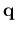

First, dynamical matrices are calculated and saved for a suitable uniform grid of q-vectors (only those in the Irreducible Brillouin Zone of the crystal are needed). Although this can be done one q-vector at the time, a simpler procedure is to specify variable ldisp=.true. and to set variables nq1, nq2, nq3 to some suitable Monkhorst-Pack grid, that will be automatically generated, centered at  = 0.
Second, code q2r.x reads the dynamical matrices produced in the preceding step and Fourier-transform them, writing a file of Interatomic Force Constants in real space, up to a distance that depends on the size of the grid of q-vectors. Input documentation in the header of PHonon/PH/q2r.f90.
Program matdyn.x may be used to produce phonon modes and frequencies at any q using the Interatomic Force Constants file as input. Input documentation in the header of PHonon/PH/matdyn.f90.
See Example 02 for a complete calculation of phonon dispersions in AlAs.